Lumiraportit · Pohjoismaat
Päivittäiset lumiraportit laskijoille: missä lunta on, mitä on tulossa ja missä kannattaa laskea, SnowScopen lumikartasta ja mittausasemilta. Jokainen luku tulee päivän tiedoista.
Snow by country today
The whitest countries today: Sweden (95 %), Finland (95 %) and Norway (94 %).
Most new snow in the week ahead: Norway (44 cm), Sweden (19 cm) and Finland (10 cm).
Snow today at the main resorts
- Abisko · 137 cm
- Sulitjelma Fjellandsby · 124 cm
- Tromsø Alpinpark · 69 cm
- Bydalsfjällen · 48 cm
- Gräftåvallen · 42 cm
- Hemsedal skisenter · 42 cm
- Orsa Grönklitt · 39 cm
- Myrkdalen · 36 cm
- Jølster Skisenter · 35 cm
- Volda skisenter · 32 cm
- Hornindal · 31 cm
- Järvsöbacken · 30 cm
- Lindvallen · 26 cm
- Surnadal · 26 cm
- Åre · 26 cm
- Sunndal alpinsenter · 25 cm
- Rukatunturi · 23 cm
- Saariselka · 23 cm
- Tusten Skiheiser · 23 cm
- Kiririnteet · 22 cm
- Ski Saariselkä · 22 cm
- Ramundberget · 21 cm
- Skarmoen Alpinpark Bodø · 21 cm
- Storlien · 21 cm


Himos avaa valmiin hiihtosilmukan 14. marraskuuta, kun luonnonlumi puuttuu edelleen metsän pohjalta tämän suomalaisen hiihtokeskuksen ympäristöstä.
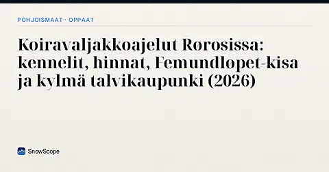
Røros sijaitsee 630 m korkeudella vuoristolaakealla. 13. marraskuuta säähavaintoasemalla mitattiin 11 cm lunta—ohut mutta oikea talvilumi koiravaljakkokauden alkuun.
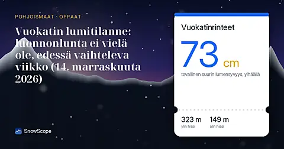
Vuokatin lumitilanne marraskuun puolivälissä 2026: Sotkamon asemilla mitattiin 13. marraskuuta 0 cm, Kajaanissa 1 cm; tälle viikolle ennustetaan noin 9 cm, osin vetenä; rinteet aiotaan avata 4. joulukuuta. 46 mennyttä talvea.
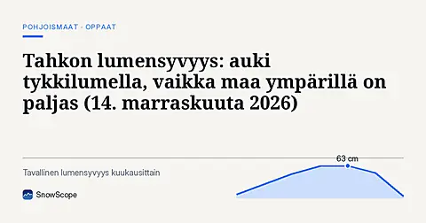
Tahko avautuu tekonlumella kun luonnonlumi sulaa. Odotettavissa 7–8 cm ensi viikolla; sade ja märkä lumi todennäköisiä. Vain 2 hissiä käynnissä nyt.

Rovaniemelle tuli ensimmäinen lumi 13. marraskuuta: 7–8 cm maanpinnalla. Tässä on tiedot koiratilain hinnoista, avautumisajoista ja turvallisista koirakävelyistä arktisella alueella.

Kirjunan kaupungissa oli 0 cm lunta 13. marraskuuta. Koiravaljakon ajajat toimivat ohuen alkukauden lumen kanssa. Mitä sinun tulee tietää kierroksista ja paikallisista säännöistä.
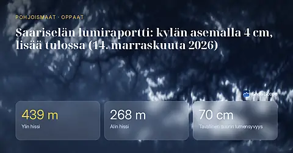
Saariselkällä mitattiin 4 cm lunta asemalla 13. marraskuuta. Seuraavalle viikolle on ennustettu noin 22 cm. Tavallinen lumensyvyys kohteessa Saariselkä 14. marraskuuta on 17 cm.

13. marraskuuta 2026 Tukholman ja Helsingin sääasemilla mitattiin 0 cm lunta, kun Sälenissä oli 45 cm ja Uumajassa 20 cm. Selitys löytyy korkeudesta, merestä, kaupungista ja myrskyjen reitistä, ja 46 mennyttä talvea tukee sitä.

Lumi on ohutta ja epätasaista Pyhä-Luostossa 13. marraskuuta, mutta seuraavien seitsemän päivän aikana ennustetaan jopa 23 cm lunta kaikilla korkeuksilla.
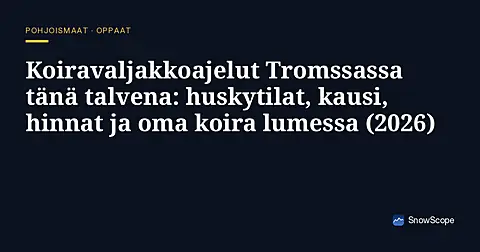
Käytännön opas koiravaljakkoajeluihin Tromssan ympäristössä talvella 2026–27: matkailutoimiston listaamat huskytilat, lumikauden alku, ajelun hinta, kaamos ja säännöt oman koiran lenkitykseen lumella ja porojen lähellä.

Helsinki koiranomistajille tänä viikonloppuna: perjantaina kaikilla viidellä kaupungin asemalla mitattiin 0 cm lunta. Östersundomin koirametsä, lähes sata koira-aitausta, latujen säännöt ja harmaa, leuto viikonloppu.
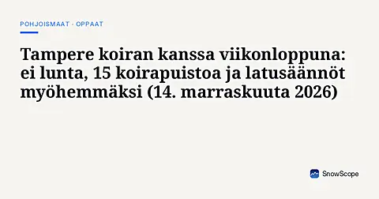
Ei lunta Tampereella 14. marraskuuta: paljasta maata kaikilla asemilla, märkiä lumihiutaleita ennustetaan lauantaiksi. Koirapuistot ovat avoinna ympäri vuoden; lasketteluradan koirapuistot kieltävät koirat paitsi erityisillä koirille varatuilla illoilla.

Ylläksen lumitilanne marraskuun puolivälissä 2026: Ylläksen ympäristön sääasemilla mitattiin 13. marraskuuta 0–2 cm, selvästi alle normaalin; tälle viikolle ennustetaan noin 23 cm lunta ilman sadetta, ja rinteet aiotaan avata 21. marraskuuta.
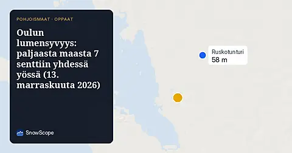
Oulun ensimmäinen lumipeite talvesta saapui 13. marraskuuta: 7 cm kaupungin mittausasemalla, tavallista 2 cm enemmän tälle päivämäärälle. Ennuste: 2–3 cm lisää lauantaihin mennessä.
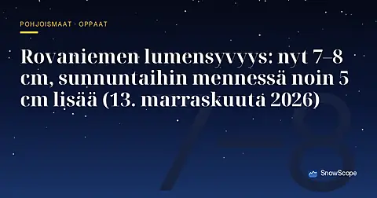
Rovaniemella on 13. marraskuuta 7–8 cm lunta, ja viikonlopulle on ennustettu 5 cm lisää. Ohut mutta tasainen napapiirillä.
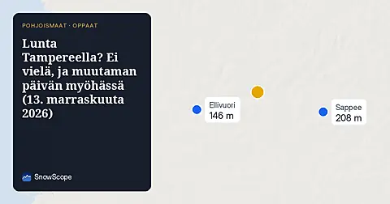
Tampereella ei ole lunta 13 marraskuuta, mutta 2 cm putosi 48 km päässä. Kaupunki on muutaman päivän jäljessä; yleensä puolella talvista on lunta jo nyt.

Suomen lumi 13. marraskuuta on Oulun pohjoispuolella: 7–8 cm Rovaniemen seudulla, mutta paljas maa etelässä, jossa Helsinki mittasi 0 cm kaikilla asemilla.
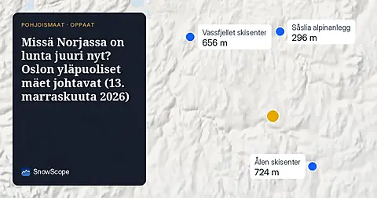
Mitattu lumensyvyys Norjassa 13. marraskuuta 2026: Oslon yläpuolella Tryvannshøgdalla 37 cm, Lyngenissä Tromssan läänissä 44 cm, sisämaan laaksoissa 10–18 cm, Bergenissä, Trondheimissa ja Finnmarkin sisäosissa paljas maa.
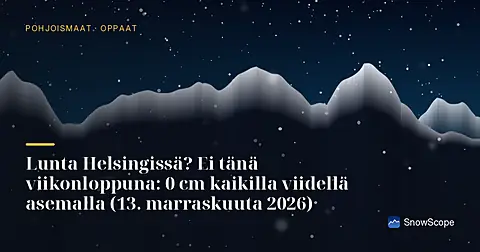
Helsinki mittasi 0 cm kaikilla asemilla 13. marraskuuta. Lumi saapuu yleensä marraskuun loppuun, mutta tänä viikonloppuna odottaa vain tihku ja sade.

Mitattu lumensyvyys Oslossa 13. marraskuuta 2026: Blindernissä 4 cm, Bjørnholtissa 31 cm ja Tryvannshøgdalla 37 cm. Miltä tavallinen marraskuun puoliväli näyttää ja mitä viikonloppu tekee lumelle.

Oslo ja Umeå johtavat 14 pohjoismaidemkaupunkia lumella 13. marraskuuta: 37 cm Oslon yläpuolella, 20 cm Umeåssa. Kiruna ja eteläiset pääkaupungit ovat paljaat.